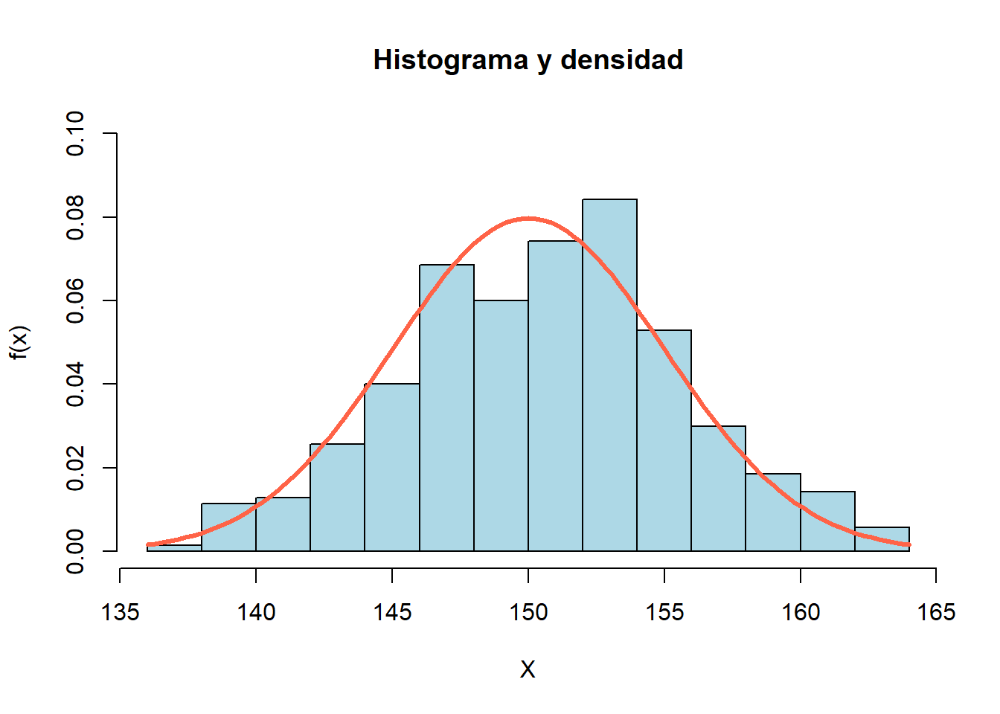

19 Distribución normal
En este capítulo se mostrará en detalle la distribución normal, la distribución más importante en estadística.
Figure 19.1: Personas formando la normal con su estatura.
A continuación un video donde se explica de manera sencilla la distribución normal.
19.1 Función de densidad
La distribución normal, también conocida como distribución gaussiana o curva de campana, es una de las distribuciones de probabilidad más importantes en estadística. Se caracteriza por ser simétrica y tiene una forma de campana. Su función de densidad de probabilidad se define mediante la siguiente ecuación:
\[ f(x | \mu, \sigma^2) = \frac{1}{\sigma \sqrt{2\pi}} e^{-\frac{1}{2} \left(\frac{x - \mu}{\sigma}\right)^2}, \]
donde:
- \(x\) es el valor de la variable aleatoria \(X\).
- \(\mu\) es la media (promedio) de la distribución.
- \(\sigma\) es la desviación estándar, que mide la dispersión de los datos.
19.2 Visualización de la distribución
Generemos un gráfico de la función de densidad de probabilidad de la distribución normal estándar.
curve(dnorm(x, mean=0, sd=1),
from=-4, to=4, lwd=3, col="blue",
main = "N(0, 1)", xlab = "X", ylab = "f(x)")Figure 19.2: Ejemplo 1 de distribución normal.
En el gráfico anterior, la curva azul representa la distribución normal estándar. Como se puede observar, tiene una forma de campana y es simétrica en torno a la media de 0.
curve(dnorm(x, mean=1.65, sd=0.15),
from=0, to=4, lwd=3, col="tomato",
main = "N(mu=1.65, sigma2=0.15^2)",
xlab = "X", ylab = "f(x)")Figure 19.3: Ejemplo 2 de distribución normal.
Vamos a comparar el efecto de la media y la desviación.
Figure 19.4: Varias densidades normal.
19.3 Características de la Distribución Normal
La distribución normal tiene las siguientes características clave:
Simetría: Es simétrica alrededor de la media (\(\mu\)), lo que significa que las colas izquierda y derecha de la distribución son idénticas.
Unimodal: Tiene un solo pico en la media (\(\mu\)).
Forma de Campana: La función de densidad de probabilidad forma una curva en forma de campana.
Regla Empírica: Aproximadamente el 68% de los datos caen dentro de una desviación estándar de la media, el 95% dentro de dos desviaciones estándar y el 99.7% dentro de tres desviaciones estándar.
Figure 19.5: Regla empírica normal.
19.5 Cálculo de Probabilidades
Calculemos algunas probabilidades utilizando la función pnorm(q, mean, sd). Los casos usuales de probabilidades en distribución normal se muestran en la siguiente figura.
Figure 19.6: Casos de probabilidades en distribución normal.
pnorm() entrega la probabilidad de cola a izquierda.
Ejemplo
Suponga que \(Z \sim N(0, 1)\). Calcular \(P(Z < 1.5)\).
Solución
Para calcular esta probabilidad utilizamos el siguiente código:
## [1] 0.9331928La probabilidad de que \(Z\) sea menor que 1.5 en la distribución normal estándar es aproximadamente 93.32%.
Ejemplo
Suponga que \(Y \sim N(5, 9)\). Calcular \(P(Y > 5.3)\).
Solución
Para obtener la probabilidad lo podemos hacer de dos formas.
Forma 1
## [1] 0.4601722Forma 2
## [1] 0.4601722La probabilidad de que \(Y\) sea mayor que 5.3 es aproximadamente 46.01%.
Ejemplo
Suponga que \(W \sim N(150, 25)\). Calcular \(P(140 < W < 156)\).
Solución
Para calcular esta probabilidad utilizamos el siguiente código:
## [1] 0.8621802La probabilidad de que \(P(140 < W < 156)\) es aproximadamente 86.21%.
Ejemplo
Suponga que \(Q \sim N(16, 16)\). Calcular \(P(Q < 14 \, \text{ó} \, Q > 18)\).
Solución
Para calcular esta probabilidad utilizamos el siguiente código:
cola_izq_de_14 <- pnorm(q=14, mean=16, sd=4)
cola_der_de_18 <- pnorm(q=18, mean=16, sd=4, lower.tail=FALSE)
rta <- cola_izq_de_14 + cola_der_de_18
rta## [1] 0.6170751La probabilidad de que \(P(Q < 14 \, \text{ó} \, Q > 18)\) es aproximadamente 61.71%.
Ejemplo
Una empresa tiene 1700 empleados y los sueldos mensuales de los empleados siguen una distribución normal con media de 4.5 millones de pesos, con una desviación estándar de 1.2 millones de pesos. ¿Cuál es el número esperado de trabajadores que reciben sueldos entre 3 y 5 millones de pesos?
Solución
Para calcular esta probabilidad utilizamos el siguiente código:
## [1] 945.0115Primero se calcula la probabilidad de que \(P(3 < S < 5)\) y luego se multiplica por el número de empleados, eso nos da que aproximadamente 945 empleados reciben sueldos entre 3 y 5 millones de pesos.
19.6 Cálculo de cuantiles
Calcular un cuantil significa que estamos interesados en averiguar el valor de la variable aleatoria \(X\) tal que \(P(X<q) = p\), en otras palabras, aquí sabemos que la probabilidad vale \(p\) y nosotros debemos obtener el valor de \(q\) que la probabilidad a la izquierda sea ese valor \(p\). En la siguiente figura se muestra una ilustración del problema.

Figure 19.7: Calculando un cuantil.
Ejemplo
(Ejercicio propuesto 14) La duración de un determinado tipo de lavadora automática tiene una distribución normal con una media de 3.1 años y una desviación estándar de 1.2 años. El fabricante quiere ofrecer un cambio de lavadora al 15% de las lavadoras que duren menos. ¿Cuál es el tiempo de duración máximo que debería poner en la publicidad para reponer solo el 15% de las lavadoras.
Solución
Gráficamente el problema se puede resumir de la siguiente manera.
shadow.dist(dist='dnorm', param=list(mean=3.1, sd=1.2),
a=qnorm(p=0.15, mean=3.1, sd=1.2), type='lower', from=0, to=6,
main='', las=1,
col.shadow='springgreen3', xlab='X', ylab='Densidad')
text(x=1.3, y=0.05, "0.15", col="yellow1", cex=2)Para calcular el valor solicitado usamos el siguiente código:
## [1] 1.85628Del resultado anterior podemos afirmar que el anuncio publicitario debería decir algo como “Si su lavadora dura 1.85 años o menos, nosotros se la reemplazaremos por una nueva lavadora”. De esa manera el fabricante sólo debería tener un 15% de reclamaciones.
19.7 Ejemplo de generación de datos
La función rnorm() es muy utilizada para simular datos de una población normal. Con los datos simulados se pueden poner a prueba procedimientos estadísticos o realizar simulaciones de sistemas reales.
Ejemplo
Generar \(n=350\) observaciones de una \(N(150, 25)\). Con los datos simulados construya un histograma y sobre el histograma superponga la curva de densidad de una \(N(150, 25)\). Comente los resultados gráficos.
Solución
set.seed(12345) # Funcion para fijar la semilla y poder replicar la simulacion
x <- rnorm(n=350, mean=150, sd=5)Vamos a explorar los primeros diez valores que están dentro del vector x.
## [1] 152.9276 153.5473 149.4535 147.7325 153.0294 140.9102 153.1505 148.6191
## [9] 148.5792 145.4034Usando el vector x vamos ahora a dibujar el histograma y la densidad.
hist(x, freq=FALSE, col="lightblue", border="black", ylim=c(0, 0.10),
main="Histograma y densidad", xlab="X", ylab="f(x)")
curve(dnorm(x, mean=150, sd=5), lwd=3, col="tomato", add=TRUE)
En el histograma tiene una forma de campana y es parecido a la densidad teórica de color rojo. Entre más valores se simulen, mejor se verá el histograma y se parecerá cada vez más a la densidad teórica.
19.8 Estimación de los parámetros \(\mu\) y \(\sigma\)
En el paquete MASS de R hay una función llamada fitdistr() que sirve para estimar los parámetros de varias distribuciones, entre ellas la distribución normal. La estructura de la función es la siguiente:
Los parámetros de la función son:
x: vector con los datos.densfun: nombre de la distribución que se asume para los datos. Los posibles valores son “beta”, “cauchy”, “chi-squared”, “exponential”, “gamma”, “geometric”, “log-normal”, “lognormal”, “logistic”, “negative binomial”, “normal”, “Poisson”, “t” y “weibull”.
Ejemplo
Suponga que vamos a simular observaciones una \(N(150, 81)\). a) Genere \(n=15\) observaciones y con los datos simulados estime \(\mu\) y \(\sigma\). b) Genere \(n=1500\) observaciones y con los datos simulados estime \(\mu\) y \(\sigma\). c) Compare los resultados y concluya.
Solución
Vamos a simular la primera muestra.
##
## Adjuntando el paquete: 'MASS'## The following object is masked from 'package:dplyr':
##
## select## mean sd
## 151.371459 7.350079
## ( 1.897782) ( 1.341935)De la salida anterior tenemos que \(\hat{\mu}=151.37\) y \(\hat{\sigma}=7.35\).
fitdistr se llaman “errores estándar”, son la variabilidad que tiene la estimación.
Vamos a simular la segunda muestra.
## mean sd
## 149.9354547 8.7982331
## ( 0.2271694) ( 0.1606330)De la salida anterior tenemos que \(\hat{\mu}=149.94\) y \(\hat{\sigma}=8.80\).
Al comparar las estimaciones vemos que \(\hat{\mu}\) y \(\hat{\sigma}\) son más cercanos a los verdaderos valores cuando \(n=1500\). Esto significa que al tener un tamaño muestral mayor, las estimaciones son mejores.
Otra cosa interesante es que los errores estándar disminuyen al aumentar el tamaño de la muestra. Esto es coherente, al tener mayor información, mejor es la estimación.
19.9 Ejercicios
- ¿Cuáles de los siguientes enunciados son verdaderos?
- La distribución normal es asimétrica.
- Es necesario conocer la media y la desviación estándar para construir una distribución normal específica.
- Cada combinación de media y desviación estándar en una distribución normal define una densidad diferente.
- La distribución normal se extiende al infinito en cualquier dirección a partir de la media.
- La distribución normal se mide en una escala discreta.
- El área total bajo la curva es igual a 1.
- La probabilidad de que una variable aleatoria tenga un valor entre dos puntos cualesquiera es igual al área bajo la curva entre esos dos puntos.
- La distribución normal estándar tiene media 1 y varianza 0.
- La tabla de distribución normal estándar sirve para calcular probabilidades de cualquier distribución normal.
- Estandarizar un valor x significa restarle la desviación y dividir por la media.
- La probabilidad de que una variable aleatoria continua tome un valor dado es cero.
- La función de densidad de probabilidad (fdp) de una variable aleatoria continua sirve para conocer en qué región es más probable encontrar valores de la variable.
Rtas: F, V, V, V, F, V, V, F, V, F, V, V.
- Si Z es una variable aleatoria normal estandarizada,
- ¿Cuál es el rango de la variable aleatoria Z?
- ¿Cuál es la probabilidad de tomar un valor menor que cero?
- ¿Cuál es la probabilidad de que Z tome un valor entre -3 y +3?
- ¿Cuál es la probabilidad de obtener un valor en el rango media más menos dos desviaciones estándar?
- ¿Cuál es la probabilidad de que Z tome un valor comprendido entre -1.28 y +1.65?
Rtas: reales, ½, 0.9973, 0.9544, 0.8502
- Determinar las siguientes probabilidades para la variable aleatoria normal estándar (Dibuje una curva normal y sombree el área bajo la curva):
- P (Z < 1.32).
- P (-2.34 < Z < 1.76).
- P (Z < 3).
- P (0 < Z < 1).
- P (Z > 1.457).
- P (-3 < Z < 3).
- P (Z > -2.153).
Rtas: 0.9066, 0.9511, 0.9986, 0.3413, 0.0726, 0. 9973, 0.9843
- Suponga que Z tiene una distribución normal estándar. Determine el valor de z que resuelve las siguientes probabilidades (Dibuje una curva normal, sombree el área bajo la curva y ponga los valores correspondientes en el eje horizontal):
- P (-z < Z < z) = 0.95.
- P (Z < z) = 0.9.
- P (-z < Z < z) = 0.99.
- P (Z < z) = 0.5.
- P (-z < Z < z) = 0.684.
- P(Z > z) = 0.1.
- P (-z < Z < z) = 0.9973.
- P (-1.24 < Z < z) = 0.8.
Rtas: 1.96, 1.28, 2.58, 0, -1, la misma del literal b, 3,
- Averigüe el valor z que corresponde a cada área descrita:
- El 70% de los elementos está a la derecha de este valor z.
- El 20% de los elementos se encuentra a la izquierda de este valor z.
- El 10% de los elementos es mayor que este valor z.
- El 60% de los elementos es menor que este valor z.
- El 50% de los elementos se encuentran a la derecha de este valor z.
- El 30% de los elementos se encuentran a la izquierda de este valor z.
Rtas) qnorm(p=0.7, lower.tail=F); qnorm(p=0.2), qnorm(p=0.1, lower.tail=F); qnorm(p=0.6, lower.tail=T); qnorm(p=0.5), qnorm(p=0.3).
- La duración de un determinado tipo de lavadora automática tiene una distribución normal, con una media de 3.1 años y una desviación estándar de 1.2 años. La compañía ofrece en su garantía que si la lavadora presenta algún defecto será reemplazada.
- Describa gráficamente esta distribución en particular.
- Si la lavadora está garantizada por un año, ¿qué proporción del total de unidades vendidas tendrá que ser reemplazada?
- Si el fabricante de las lavadoras está dispuesto a reemplazar sólo el 3% de las lavadoras que vende. ¿Por cuántos meses debe ofrecer la garantía para asegurar que no más de un 3% de las lavadoras tendrá que ser reemplazada?
- ¿Qué porcentaje de las lavadoras vendidas van a durar entre 3 y 6 años?
Rtas) curve(dnorm(x,mean=3.1,sd=1.2), xlim=c(0,6)); pnorm(q=1, mean=3.1, sd=1.2); qnorm(p=0.03, mean=3.1, sd=1.2); pnorm(q=6, mean=3.1, sd=1.2) - pnorm(q=3, mean=3.1, sd=1.2).
- El consumo promedio de combustible de una flota de 1000 camiones sigue una distribución normal con una media de 12 millas por galón y una desviación estándar de 2 millas por galón. Escriba las instrucciones en R para calcular cada una de las siguientes probabilidades.
- ¿Cuántos camiones tendrán un promedio de 11 millas o más por galón?
- ¿Cuántos camiones tendrán un promedio de menos de 10 millas por galón?
- ¿Cuántos camiones tendrán un promedio entre 9.5 y 14 millas por galón?
- Averigüe la probabilidad de que un camión elegido al azar tenga un promedio de 13.5 millas por galón o más.
- ¿El 70% de los camiones tuvo un promedio más alto que cuántas millas por galón?
- ¿El 10% de los camiones tuvo un promedio menor que cuántas millas por galón?
Rtas)
1000*pnorm(q=11, mean=12, sd=2, lower.tail=F);
1000*pnorm(q=10, mean=12, sd=2);
1000*(pnorm(q=14, mean=12, sd=2)-pnorm(q=9.5, mean=12, sd=2));
1-pnorm(q=13.5, mean=12, sd=2);
qnorm(p=0.3, mean=12, sd=2);
qnorm(p=0.1, mean=12, sd=2);
Para medir los conocimientos sobre cierta materia en una misma población, se utilizan dos tipos de pruebas, A y B. Los resultados en ambas tienen distribución normal y la media de los resultados en la prueba A es 78.3 con una desviación estándar de 4.2 puntos. La media de las puntuaciones en la prueba B es 58.1 y su desviación estándar de 3.2 puntos. Una persona ha obtenido 83.1 puntos en la prueba A y otra persona ha conseguido 67.5 en la prueba B. ¿Cuál de las dos personas se encuentra en mejor posición? ¿Por qué? Rta: La persona que presentó B se encuentra en mejor posición.
Una empresa ha encontrado que la duración de sus llamadas telefónicas a larga distancia tiene aproximadamente una distribución normal, con media de 30 minutos y desviación típica de 3 minutos. Escriba el código en R para calcular lo siguiente.
- ¿Qué proporción de las llamadas a larga distancia tienen una duración de más de 20 minutos, pero de menos de 30 y medio minutos?
- ¿Qué proporción de llamadas se completan en 10 minutos o menos?
- Una secretaria va a hacer una llamada a larga distancia. ¿Cuál es la probabilidad de que dure más de 50 minutos?
Rtas)
pnorm(q=30, mean=30, sd=3)- pnorm(q=20, mean=3, sd=3);
pnorm(q=10, mean=30, sd=3);
pnorm(q=50, mean=30, sd=3, lower.tail=F).
- El gerente de personal de una gran compañía requiere que los postulantes a un puesto efectúen una prueba de aptitud y que en ella obtengan una calificación mínima de 500. Si las calificaciones de la prueba se distribuyen normalmente con una media de 485 y desviación estándar de 30:
- ¿Qué porcentaje de postulantes aprobará la prueba?
- Si aquellos postulantes que obtienen un puntaje comprendido entre 471 y 499 pueden optar a una segunda oportunidad, y un total de 1200 postulantes rindió la primera prueba, ¿cuántos de los 1200 postulantes tendrán derecho a rendir la prueba por segunda vez?
- Si el puntaje de la segunda prueba se relaciona con el puntaje de la primera prueba a través de la expresión: Y=1.25 X + 2.5, donde Y es el puntaje en la segunda prueba y X es el puntaje obtenido en la primera prueba, determine la probabilidad de que en la segunda prueba un postulante cualquiera elegido al azar obtenga el puntaje aprobatorio de 500 puntos o más.
- Determine un puntaje “k” correspondiente al percentil 90 de la distribución. Interprete.
- Se regula una máquina despachadora de refresco para que sirva un promedio de 200 mililitros por vaso. Si la cantidad de bebida se distribuye normalmente con una varianza igual a 225 mililitros2,
- ¿cuál es la probabilidad de que un vaso contenga entre 191 y 209 mililitros?
- ¿cuántos vasos probablemente se derramarán si se utilizan vasos de 230 mililitros para las siguientes 800 bebidas?
Rtas: 0.4514; aproximadamente 18 vasos.
- Los salarios de los profesionales en cierto departamento son en promedio 11.9$ por hora y la desviación estándar de 0.4$. Si los salarios tienen una distribución normal. ¿Cuál es la probabilidad de que un profesional seleccionado al azar:
- Reciba salarios entre 10.9 y 11.9.
- Reciba salarios inferiores a 11.
- Reciba salarios superiores a 12.95.
- ¿Cuál debe ser el salario menor que gana un trabajador que se encuentra entre el 10% de los trabajadores que más ganan?
- Si el dueño de la industria va a aumentarle el salario al 15% de los trabajadores que menos ganan. ¿Cuál será el salario máximo que deberá ganar un trabajador para ser beneficiado con el aumento?
Rtas: 0.4938; 0.0122; 0.0043; 12.412$; 11.484$.